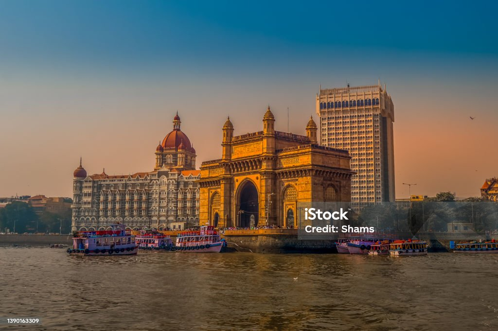
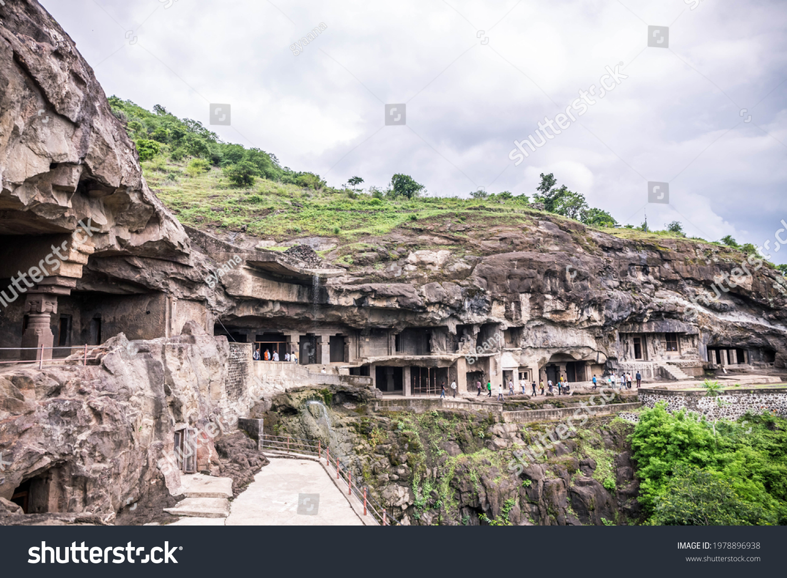

Cities The capital city is known for its culture and busy city life.
Mahabaleshwar is a hill station located in the Western Ghats, in Satara district of Maharashtra.

Ajanta and Ellora caves, considered to be one of the finest examples of ancient rock-cut caves, are located near Aurangabad in Maharashtra, India.
